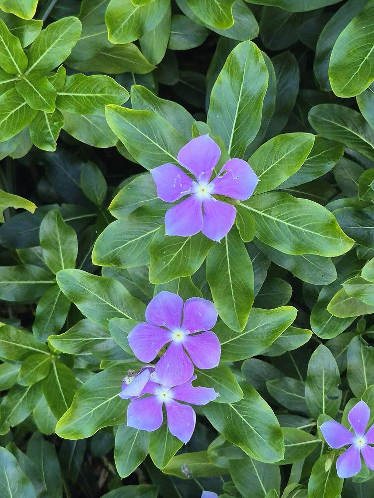

🌸 நித்யகல்யாணி – உங்களுக்குத் தெரியுமா?
1ஆண்டு முழுவதும் பூக்கும் பூ
வருடத்தின் எல்லா நாட்களிலும் இடைவிடாமல் பூப்பதால் "நித்ய" (என்றும்) "கல்யாணி" என்று பெயர் பெற்றது.
2புற்றுநோய் மருந்தின் தாய்
உலகப் புகழ்பெற்ற "வின்கிரிஸ்டின்", "வின்பிளாஸ்டின்" என்ற புற்றுநோய் மருந்துகள் இந்தச் சிறு செடியிலிருந்தே கண்டுபிடிக்கப்பட்டன.
3கால்நடைகள் தொடாத செடி
இதில் சக்தி வாய்ந்த வேதிப்பொருட்கள் இருப்பதால் ஆடு, மாடுகள் இதை மேய்வதில்லை. வறண்ட, சத்தில்லா மண்ணிலும் செழித்து வளரும்.
🌿 சித்த மருத்துவக் குறிப்பு:
நீரிழிவு நோய்க்குப் பாரம்பரியமாக இது பயன்பட்டு வந்தாலும், இதில் சக்தி வாய்ந்த நச்சுப்பொருட்கள் உள்ளதால் சித்த மருத்துவர் வழிகாட்டுதல் இன்றி வீட்டில் உட்கொள்ளக் கூடாது. (அழகுச் செடியாக வளர்க்க மிகவும் ஏற்றது.)